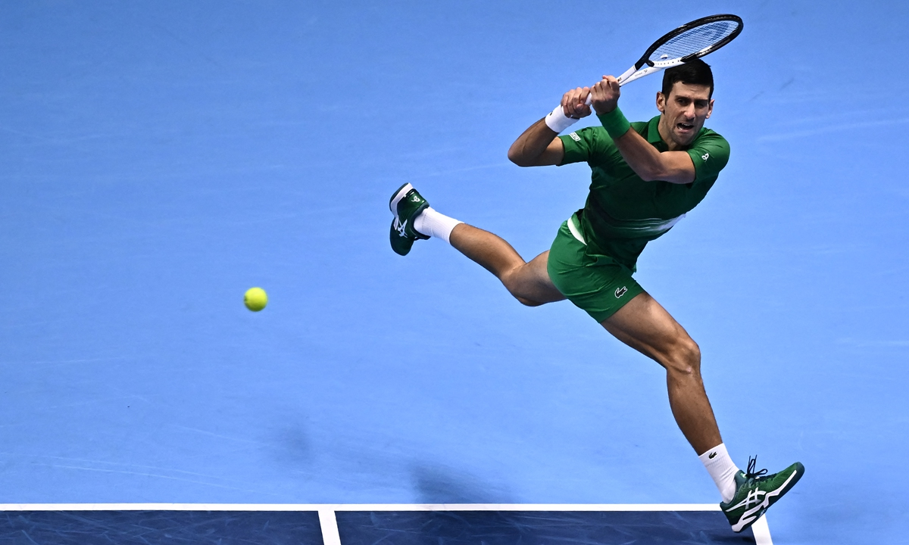

Numbers Don't Lie: A Mathematical Model Demonstrating the Importance of the Return of Serve in Tennis
Ever since the age of nine, tennis has become an integral part of my life, encapsulating me with its fluidity of movement and intricate choreography, synonymous to a painter's eloquent brush strokes. Over the years…